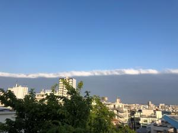
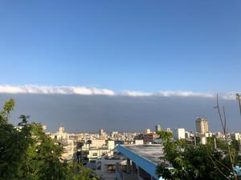

うるがいの話 ある日
最新: 明暗【うるがいの話 ある日】とは 一日だけのプログです
『うるがいの話』の最新一日だけのプログで、通信料が少なく経済的だ。カニの画像をクリックすると全ての日付が載る『うるがいの話』サイトを表示します
|
|
【うるがいの話】 うるがい(ｳﾙｶﾞｲ urugai)とは、『もずくがに』の名前でとても大きくなります。 |
|---|---|
|
|
【カミマヤーの話】 猫のことを方言でマヤーといいます。カミマヤー（kamimayaa）とは、神の猫のことです。 |
|
【たながぁの音楽】 たながぁ（ﾀﾅｶﾞｰtanagaa）とは手長えびのことで、何種類かあり大きいのは車 エビぐらいになります。 |

|
【ぶながぁの話】 ぶながー(bunagaa)とは、赤い髪の毛、赤い身体、そして身長は１ｍ２０ｃｍ ぐらい、川の蟹を食べているの目撃された。場所は沖縄県国頭郡大宜味村のと ある村僕の隣近所に住んでいる爺さんから、聞いた話です。 |
|
|
【ギーマの話】 ギーマ(giima)とは、山原の里山に咲くスズランに似た、 花を付けます。実は食べられます、 気が付くと口の周りが紫になっています。 |
2022年04月18日 (月）明暗
18:02

今朝７時の西の空です、砂漠地帯の砂嵐のように青い空と、朝日を浴びた帯の
ような白い雲に仕切られた暗い雲が、東シナ海の海の上に広がっていました。
前線でもないようです、珍しいので写真を撮りました。
懲りずにＮＨＫに投稿した。

よくできています、おつかれさまでした！
ホッ、動画研修最後の課題提出にたいする講師からのメールです。フムフムわ
たくしは一応その筋のひとなので。
１７時５６分 ビットコインの総資産 ￥１４、３１１↓